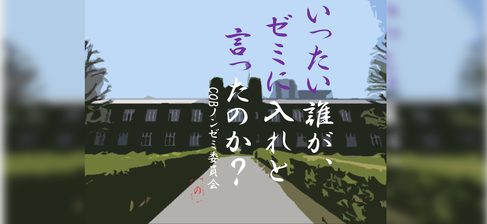

「ゼミに入らない」という選択肢を提案します
皆さんが全力でゼミを探す時期。多くのゼミの先輩たちが自分たちのゼミの魅力を伝えようと全力です。
その中で「ゼミに入るのが当たり前」「ゼミに入らないと大変なことになる」といった気持ちが芽生えていきます。
確かにゼミでは多くのことを学ぶことができ、かけがえのない仲間もできるでしょう。
しかし、
「ゼミに入らない」という選択肢も当然あります。事実、ゼミに入らずに活動している先輩もたくさんいます。
ノンゼミに対する不安や疑念もあるとは思いますがリクルート期間の雰囲気に流されずに
自分が本当にしたいことは何か。
自分の大学生活を決めるにあたって、このサイトを参考にしていただければ幸いです。